OPEN MICROLED DRIVER ASIC / 2026-10-24 / 实验性研发方法验证与教学
MicroLED 驱动器：供电、电阻角与封装扰动验证
结论：原9–11 mV电压余量不足。 电源仅增加50 mV，或仅加入声明的供电与回地封装阻抗，旧核心就超过电压筛查线。我们更换实际MOS器件、修改输入电阻和版图并重新提取寄生，已经增大相对器件筛查限值的电压余量；但接收与供电扰动仍必须独立验证。
本报告把显示PWM与高速光通信分开。先看失败的物理原因，再看实际修改和同条件数据；“仿真成功”“接收通过”“电压筛查通过”“版图检查通过”各有证据，不能互相代替。当前成果属于实验性研发方法验证，尚不是产品规格或流片签核。
1. 先把显示PWM与高速光通信分开
两者都需要建立 LED 电流，但优化目标不同。PWM 显示用一个较稳定的导通电流乘以导通时间来控制平均电流；高速 NRZ 则必须让每个数据位在有限时间内形成接收器能够区分的两个光强状态。本项目的“光强”仍是电流经过动态模型后的代理量，没有实测光功率或 BER。
| 项目 | 像素显示 PWM | 高速光通信 NRZ |
|---|---|---|
| 当前电路 | 39 MOS 模拟宏：参考源、独立保护、缓冲、像素镜像、LED钳位；另有RTL控制 | A：6 MOS受限输出摆幅；B：9 MOS基线电流＋电流转向 |
| 主要控制量 | 导通电流约100 µA；PWM码控制亮灯时间 | 目标电平25/100 µA；PRBS数据控制两电平切换 |
| 工作尺度 | 1 MHz时钟，256 µs帧，最小码约1 µs脉冲 | 本章实际测试0.25/0.4/0.5/1 Gb/s点；0.4 Gb/s的UI为2.5 ns |
| 需要检查 | 电流准确性、积分电荷、启动、故障关断、恢复时间 | 接收错误、眼图余量、采样时序、端电压、每比特能量 |
| 本轮主要风险 | 参考供电扰动、设置电阻误差、滤波电容的回流路径 | 薄栅氧余量太小、独立电源变化、输入RC、供电与回地寄生 |
| LED模型 | 合成模型，100 µA/27°C时约2.8 V，CJO=2 pF、TT=1 ns | 同一公开20 µm黄色LED静态I–V拟合；外加200 fF及动态代理 |
两种应用内部保持各自的原负载；没有在两种应用之间共用同一LED模型。 因此不能把PWM的电流精度与NRZ的误码结果直接横向排序。39 MOS是本项目具体测试宏的器件数量，“六MOS”也只是早期像素实现的数量描述，均不是行业标准架构名称。
PWM完整连接与历史版图见单像素闭环研究报告；高速旧版见2026-10-23报告。本章聚焦新增扰动、失败复现和修订证据。
2. 原9–11 mV余量不能承担本轮扰动
原真实RC核心在FF/−40°C、VDD=3.6 V时，A的最大端差为3.620623 V，B为3.618943 V。与3.63 V相减仅余9.377/11.057 mV。现在只把逻辑供电与DATA高电平提高到3.65 V，A/B的端电压均超过原筛查线；A在1 Gb/s仍为0/511错误，但端差已达3.670677 V。接收通过与器件电压通过必须分别判断。
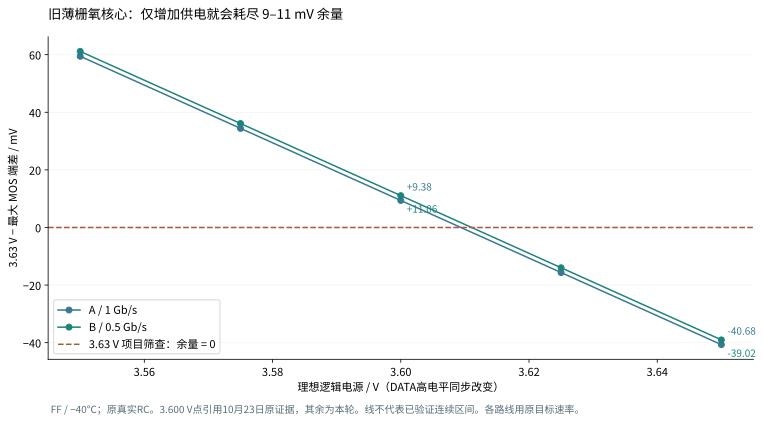
近似预算可以写成：电压预算 = 器件允许的边界 − 直流工作电压 − 动态过冲 − 电源误差 − 回地扰动。各项并非一定独立；最终用局部D/G/S/B波形检查，不能机械相加当作签核。对于3.6 V工作点，持续+50 mV偏移本身已使满摆幅达到3.65 V，输入电阻再大也不能消除这个直流事实。
另一项独立控制在外部电源仍为3.600 V时，仅向VDD和VSS路径各加入1 Ω、2 nH。旧A的最大端差升到3.721199 V，所有MOS中最大栅极到其他端子的差为3.687489 V。此时仍是0/511错误。这些R/L是声明的集总敏感度参数，尚非某个真实封装的提取值；它们证明现有余量不能覆盖这一明确案例，不证明芯片已发生实际击穿。
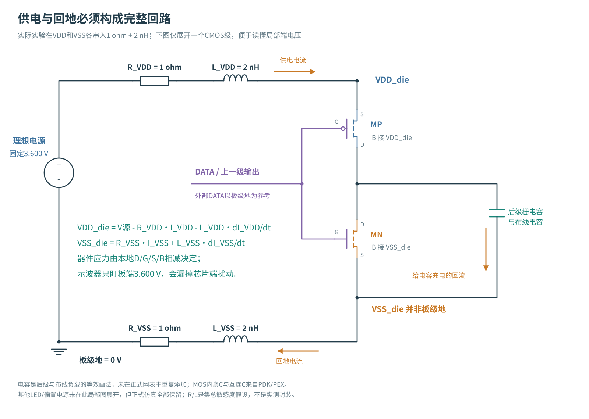
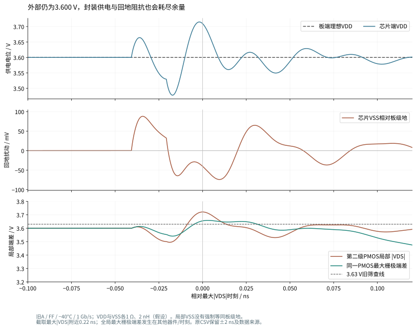
补全可靠性依据
公开GF180 DRM 14.1规定薄栅氧栅极到其他端子的绝对直流电压上限为3.63 V。此前报告仅引用Ioff电气测试表，依据不完整，现已补正。周期性超限还涉及占空比、TDDB寿命与HCI等条件；本研究对全部六组端对的瞬态统一筛查，不等同晶圆厂的完整可靠性签核。
3. 高速方向：换器件必须同时重做电路与版图
本轮试验采用同一GF180硅CMOS工艺中的06v0厚栅氧器件，未引入GaN或SiGe等新半导体材料。A的六只MOS均替换；B仅替换四只反相器MOS和两只转向MOS，三只低电压偏置MOS保留03v3。后者仍单独受3.63 V项目筛查，不能因为同一电路里有6 V器件就放宽所有管子的判断。
真实6 V NMOS/PMOS的最小沟道长度为0.70/0.55 µm，原3.3 V器件为0.28 µm。初始宽度按原W/L比例放大并对齐制造网格；这是起点，不能据此推断驱动能力、速度或电容完全相同。GF180 Poly2规则
本轮对实际06v0器件采用6.0 V全端对保守筛查，对03v3继续采用3.63 V。不是把旧器件的门限放宽，而是更换实际PDK模型、实际器件层结构并重新提取。也没有根据6 V名称直接采用6.6 V统一门限；上述公开DRM对6 V工艺的栅节点直流限制写为6 V。
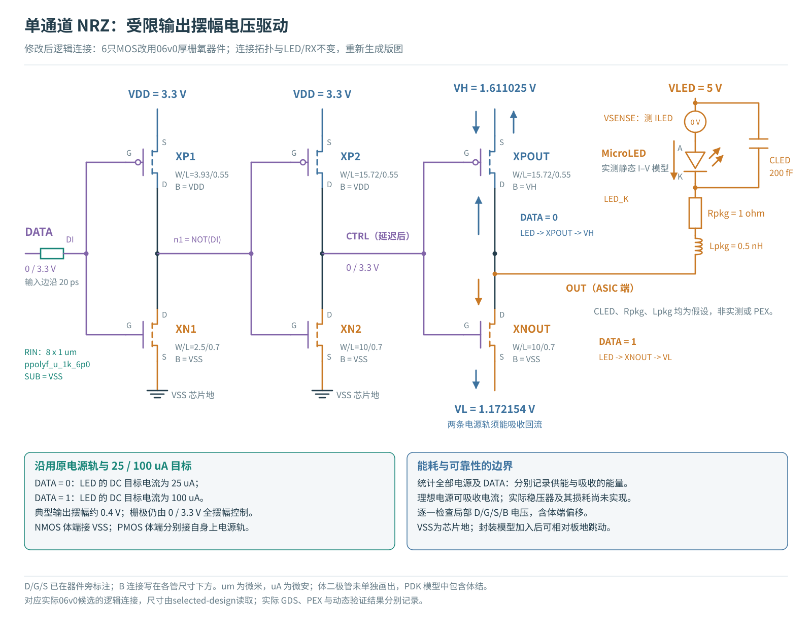
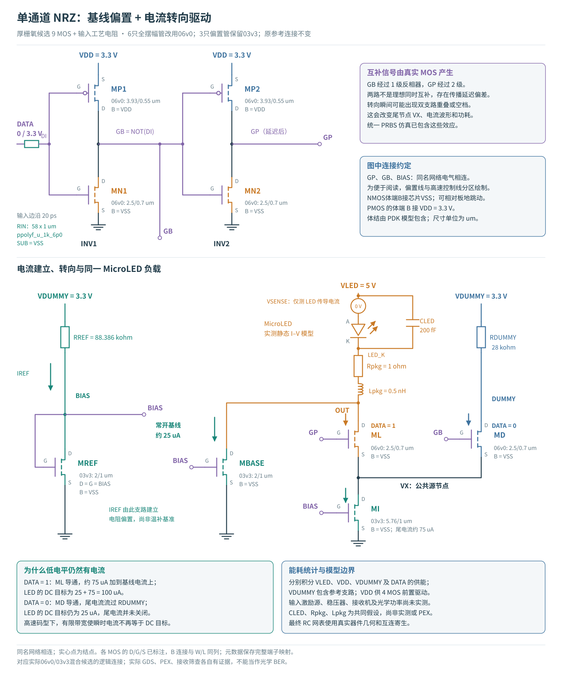
A仍依赖VH=1.611025 V、VL=1.172154 V两条理想可吸收电流的电源轨；B的RREF=88.386106 kΩ仍接已有VDUMMY=3.3 V，RDUMMY=28 kΩ。本轮不在PEX后重新校准这些值。电源生成、闭环稳压及其损耗尚未包含在核心设计中。
电阻长度与体接触是两个独立设计问题
厚栅氧器件增加了实际器件尺寸和输入负载。保留旧A的48 µm电阻时，新RC在SS/125°C、2.95 V、0.5 Gb/s虽然没有比特错误，垂直余量只有0.06716，小于0.1。将实际电阻改短到8 µm并重新生成版图后，余量提高到0.09787，仍然不通过；不得四舍五入成0.1。
短电阻还改变了提取的局部衬底返回网络。后续增加体接触的版图试验没有改善该网络的关键电阻，不能称为成功修复。对提取图逐条分析发现，RIN衬底端与XN2体端是不同节点，但后者是无其他DC负载的叶节点；这解释了单位电流诊断中两者电位相同。该结果描述当前提取电阻图，不能据此确定真实晶圆里的三维衬底耦合。
实际版图与几何代价
| 核心 | 外框 / µm | 外框面积 / µm² | MOS＋工艺电阻 | 提取互连R / 显式C | 显式C总和 / fF |
|---|---|---|---|---|---|
| 旧A，03v3＋RIN48 | 42.31×57.60 | 2437.06 | 6＋1 | 84 / 61 | 35.880 |
| 新A，06v0＋RIN48 | 42.555×57.92 | 2464.79 | 6＋1 | 79 / 62 | 49.069 |
| 选定A，06v0＋RIN8 | 42.555×31.56 | 1343.04 | 6＋1 | 79 / 64 | 49.055 |
| 旧B，03v3＋RIN58 | 60.63×67.60 | 4098.59 | 9＋1 | 127 / 76 | 35.655 |
| 选定B，混合06/03＋RIN58 | 60.63×67.60 | 4098.59 | 9＋1 | 127 / 76 | 39.252 |
A的外框变小主要来自直条电阻缩短，不能据此得出厚栅氧晶体管更小。显式C不含MOS和工艺电阻模型内部电容；上述总和不是一个可直接代入带宽公式的集中负载。
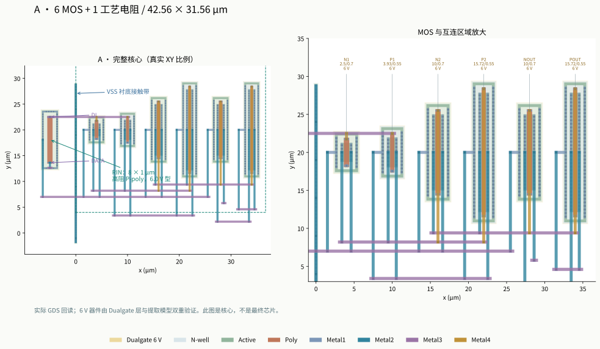
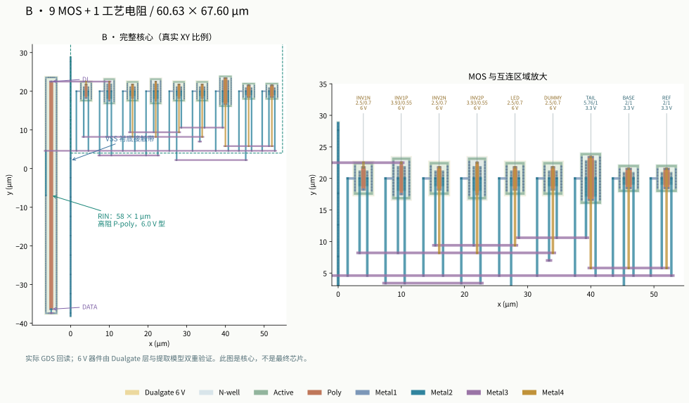
打开可切换层和网络的实际GDS查看器。图中Dualgate层及真实抽取型号共同确认6 V器件，不能靠网表改名替代工艺结构。所选核心已完成原生/回读Magic DRC、独立KLayout DRC、LVS、全网R提取、C矩阵检查与RC折叠LVS；实际GDS开路/短路反例也被LVS拒绝。最终物理来源与哈希
所有面积仅是实验核心包围盒，尚无pad、ESD、电源生成、封装和全芯片填充签核。
4. 高速仿真：把接收、应力和能量分别列出
共同条件保持不变：静态LED模型、CLED=200 fF、20 ps数据边沿；32位预热、254位PRBS7训练、511位PRBS9验证及32位尾部；光学代理时间常数200 ps、接收一阶带宽1 GHz、阈值62.5 µA，归一化跨度75 µA。训练确定采样位置，验证段不再调参。温度只作用于有温度模型的MOS与电阻，没有给LED静态曲线捏造温度特性。
联合通过要求：零错误、垂直余量≥0.1（7.5 µA判决距离）、最小水平余量≥0.1 UI，以及每一器件的电压筛查均通过。输入码长、噪声模型和接收代理限制了证据范围，不能把0/511说成产品BER。
| 路线 | 实验条件 | Gb/s | MOS / °C / VDD(V) | 电阻角 | 错误/511 | 垂直余量 | 水平/UI | 最大端差/V | 器件最小余量/mV | fJ/gross bit | 联合判定 |
|---|---|---|---|---|---|---|---|---|---|---|---|
| A | FFplus50_rate04 | 0.4 | ff / -40 / 3.65 | ff | 0 | 0.4950 | 0.1250 | 3.7142 | 2285.84 | 1547.28 | 通过 |
| A | SSminus50_rate04 | 0.4 | ss / 125 / 2.95 | ss | 0 | 0.1402 | 0.1250 | 3.0342 | 2965.81 | 986.32 | 通过 |
| A | TT_rate04 | 0.4 | typical / 27 / 3.3 | typical | 0 | 0.4702 | 0.1484 | 3.3738 | 2626.17 | 1308.23 | 通过 |
| B | FFplus50 | 0.5 | ff / -40 / 3.65 | ff | 0 | 0.2357 | 0.2812 | 3.6761 | 2002.91 | 1516.01 | 通过 |
| B | SSminus50 | 0.5 | ss / 125 / 2.95 | ss | 0 | 0.1961 | 0.2266 | 3.3547 | 1968.75 | 1110.79 | 通过 |
| B | TT | 0.5 | typical / 27 / 3.3 | typical | 0 | 0.2483 | 0.2891 | 3.3836 | 1987.92 | 1279.09 | 通过 |
换用厚栅氧后，速度与辅助电源成为主要限制
A的RIN从48 µm缩到8 µm后，在固定辅助电源的TT/27°C/3.3 V、SS/125°C/2.95 V、FF/−40°C/3.65 V三个条件下，0.4 Gb/s离散点通过。SS/2.95 V下，0.5 Gb/s垂直余量0.09787未通过；0.25 Gb/s水平余量0.078125 UI也未通过。不能把这三个点拟合成一个“最高带宽”。
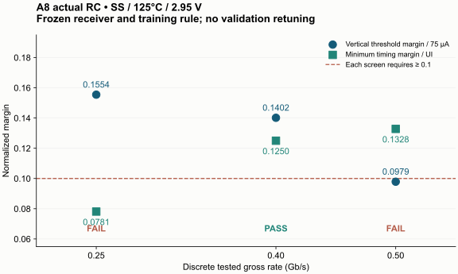
原因之一是接收算法在训练段以垂直判决距离选定采样相位，并未联合优化水平余量。0.25 Gb/s与0.4 Gb/s的右侧零错误时间约312.5 ps，换算成UI后分别是0.078125与0.125。减慢发送不必然使这个冻结判据单调改善；本轮没有为通过而修改接收器。
A的辅助电源扰动包络没有闭合。 FF/3.65 V时，仅VLED增加50 mV，或仅VH/VL共同降低50 mV，虽均为0/511错误，水平余量都只有0.09375 UI，低于0.1。SS下VDD=2.95 V、VLED=4.95 V、VH/VL共同增加50 mV的联合控制出现256/511错误；器件端电压仍合格。该联合条件的DC检查进一步得到A的I0=16.541 µA、I1=57.196 µA：连稳态高电平都低于62.5 µA判决阈值，单纯降速不能修复。B相应I0=23.148 µA、I1=89.960 µA。电压型输出直接由电源轨决定LED两端电压，电源差值变化会经LED非线性I–V改变电流，安全电压不能保证接收光强代理足够。
B在同类联合慢热控制下（VDD=2.95 V、VLED=4.95 V、VDUMMY=3.25 V），0.5 Gb/s为0/511，垂直余量0.16475、水平余量0.24219 UI。恒流偏置降低了供电差值变化对电流的影响，但仍受参考源、转向管余量和实际负载限制。
静态+50 mV条件：耐压余量增加，但峰值和取能没有下降
| FF/−40°C，VDD与DATA高均3.65 V | 最大端差/V | 器件最小余量/V | 垂直余量 | 水平/UI | 正向 fJ/bit | 联合判定 |
|---|---|---|---|---|---|---|
| A / 1G / 旧03v3 | 3.670677 | -0.040677 | 0.4228 | 0.3203 | 912.77 | 电压未通过 |
| A / 1G / 新实际器件 | 3.714158 | 2.285842 | 0.4171 | 0.2812 | 1044.81 | 通过 |
| B / 0.5G / 旧03v3 | 3.669023 | -0.039023 | 0.2712 | 0.3281 | 1391.05 | 电压未通过 |
| B / 0.5G / 新实际器件 | 3.676086 | 2.002913 | 0.2357 | 0.2812 | 1516.01 | 通过 |
这是相同FF温度、同一路线相同速率、相同LED与RX的对照。A的峰值由3.670677 V升到3.714158 V，B也略升；修复来自实际厚栅氧器件的更高电压承受范围，不是消除了过冲。两路线的输入RC、器件电容与切换过程变化，也使这个条件下的正向取能分别增加约14.47%与8.98%。A在快冷1 Gb/s通过不能推广到慢热1 Gb/s：后者仍有75/511错误。
B的“最小器件余量”须逐只计算后取最小，不能用6 V减去全电路最大端差；它保留的03v3偏置器件仍使用3.63 V筛查。两类限值分别绑定实际器件型号。
新版供电和回流封装复测
在VDD与VSS各1 Ω/2 nH的假设下，新增A/0.4 Gb/s、B/0.5 Gb/s快冷3.65 V测试均通过接收与器件电压筛查。最大端差分别为3.716228 V、3.780691 V，逐器件最小余量分别为2.283772 V、1.865131 V。封装引起的过冲仍然存在。
另外专门把新A恢复到旧封装反例的同3.600 V、同1 Gb/s、同FF/−40°C，得到最大端差3.666489 V，旧版为3.721199 V；这一特定封装条件下峰值确实下降。不能将它与前面3.65 V无供电封装的结果混成同一比较，也不能凭快冷1 Gb/s通过声称慢热1 Gb/s通过。
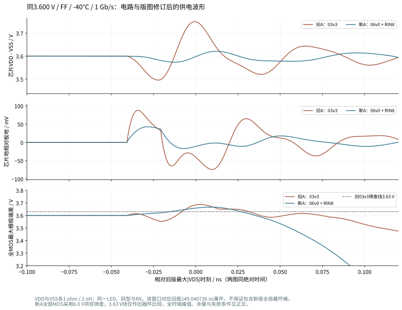
该图两个电路使用相同绝对时间窗口；它用于观察同一数据事件，整个仿真中的最大值仍以上表/完整CSV为准。窗口数据与哈希
同为0.4 Gb/s时的能量与时序取舍
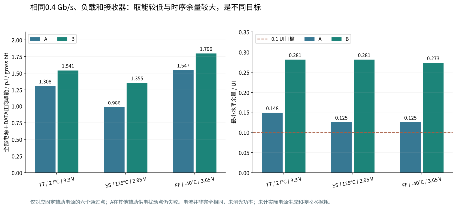
| 条件，均0.4 Gb/s | A正向 fJ/bit | B正向 fJ/bit | B相对A取能增幅 | A/B水平余量/UI |
|---|---|---|---|---|
| TT / 3.3 V | 1308.23 | 1540.52 | 17.76% | 0.1484 / 0.2812 |
| SS / 2.95 V | 986.32 | 1354.74 | 37.35% | 0.1250 / 0.2812 |
| FF / 3.65 V | 1547.28 | 1796.33 | 16.10% | 0.1250 / 0.2734 |
以上六个点均通过本轮接收与端电压筛查。A在这些固定辅助电源的条件下取能较低，B有更大的水平余量；A在其他辅助电源扰动点失败，所以不能单凭这张能量表选出完整系统方案。回灌能量单独保存，未假定实际电源一定能把它回收。
直流电流没有在PEX后重新校准
| 路线 | 条件 | MOS / 温度 | VDD/V | 数据位 | LED/uA | 相对原目标误差/% |
|---|---|---|---|---|---|---|
| A | FFplus50_DC | ff / -40°C | 3.65 | 0 | 25.3658 | 1.463 |
| A | FFplus50_DC | ff / -40°C | 3.65 | 1 | 108.5661 | 8.566 |
| A | SSminus50_DC | ss / 125°C | 2.95 | 0 | 22.4150 | -10.340 |
| A | SSminus50_DC | ss / 125°C | 2.95 | 1 | 74.1753 | -25.825 |
| A | TT_DC | typical / 27°C | 3.3 | 0 | 24.1417 | -3.433 |
| A | TT_DC | typical / 27°C | 3.3 | 1 | 97.7724 | -2.228 |
| A | joint_SSmin_VLEDaux_DC | ss / 125°C | 2.95 | 0 | 16.5410 | -33.836 |
| A | joint_SSmin_VLEDaux_DC | ss / 125°C | 2.95 | 1 | 57.1957 | -42.804 |
| B | FFplus50_DC | ff / -40°C | 3.65 | 0 | 26.3427 | 5.371 |
| B | FFplus50_DC | ff / -40°C | 3.65 | 1 | 107.7141 | 7.714 |
| B | SSminus50_DC | ss / 125°C | 2.95 | 0 | 23.6558 | -5.377 |
| B | SSminus50_DC | ss / 125°C | 2.95 | 1 | 91.9447 | -8.055 |
| B | TT_DC | typical / 27°C | 3.3 | 0 | 24.9863 | -0.055 |
| B | TT_DC | typical / 27°C | 3.3 | 1 | 99.7067 | -0.293 |
| B | joint_SSmin_VLEDaux_DC | ss / 125°C | 2.95 | 0 | 23.1475 | -7.410 |
| B | joint_SSmin_VLEDaux_DC | ss / 125°C | 2.95 | 1 | 89.9603 | -10.040 |
同一负载和电源设定不保证不同电路、温度下实际电流相同。这里保留25/100 µA原目标并列出偏差，不能把供能差异自动换算成相同实测光功率的能效。
为什么单独扫描电阻角
电阻的res_typical/res_ss/res_ff分别由PDK独立选择；不能假定“慢MOS必然配高阻、快MOS必然配低阻”。完整三端poly模型包括端部、本体温度系数和衬底电容。本轮既运行电阻独立DC校准，也将交叉电阻角放回真实RC电路。高速部分的独立电阻角仅覆盖工艺RIN；B的RREF与RDUMMY仍是固定理想电阻，没有把它们的容差纳入本轮角落结果。片电阻的800/1000/1200 Ω/□只是模型参数的一部分，不等于完整器件在所有温度下的电阻。
独立DC校准共27点（A48、A8、B58各9点），完整模型与解析计算一致。选定A8在所测温度/电阻角组合下为6.253–10.900 kΩ，B58为44.637–77.160 kΩ。电阻最大值出现在高阻角/冷端，不能只检查慢MOS/热端；实际动态影响仍由全RC瞬态决定。
本模型的公开器件表未提供该高阻poly的局部统计失配模型；角落扫描不构成阵列均匀性或良率证明。电阻模型 · 器件支持范围
动态电源的能量必须重新积分
每条电源及DATA均以实际端口电压和源电流计算 P(t)=−V(t)I源(t)，在同一511个输入UI窗口积分。正向取能、返回能量和净能量分别保存。加入供电封装R/L后，供电功率在阻抗之前取样，片内VDD和VSS另存，避免漏算供电回路损耗。理想电源轨、数据源及核心取能不包含尚未实现的稳压器、串行器、接收器或实际光电效率。
速率不相同的fJ/bit不能直接用于“同条件胜负”排序；失败点的取能也不能称作成功传输能效。下方完整表保留所有完成的正式实验，另提供CSV与输入身份。
展开最终候选的全部正式数据（含失败点）
| 路线 | 实验条件 | Gb/s | MOS / °C / VDD(V) | 电阻角 | 错误/511 | 垂直余量 | 水平/UI | 最大端差/V | 器件最小余量/mV | fJ/gross bit | 联合判定 |
|---|---|---|---|---|---|---|---|---|---|---|---|
| A | FFplus50 | 0.25 | ff / -40 / 3.65 | ff | 0 | 0.4951 | 0.1016 | 3.7142 | 2285.84 | 2050.14 | 通过 |
| A | FFplus50_1G | 1 | ff / -40 / 3.65 | ff | 0 | 0.4171 | 0.2812 | 3.7142 | 2285.84 | 1044.81 | 通过 |
| A | FFplus50_gear80 | 0.4 | ff / -40 / 3.65 | ff | 0 | 0.4950 | 0.1250 | 3.7142 | 2285.84 | 1547.28 | 通过 |
| A | FFplus50_rate04 | 0.4 | ff / -40 / 3.65 | ff | 0 | 0.4950 | 0.1250 | 3.7142 | 2285.84 | 1547.28 | 通过 |
| A | FFplus50_res_ss | 0.4 | ff / -40 / 3.65 | ss | 0 | 0.4950 | 0.1172 | 3.7048 | 2295.16 | 1558.81 | 通过 |
| A | FFplus50_res_typical | 0.4 | ff / -40 / 3.65 | typical | 0 | 0.4950 | 0.1250 | 3.7089 | 2291.11 | 1552.80 | 通过 |
| A | FFplus50_trap | 0.4 | ff / -40 / 3.65 | ff | 0 | 0.4950 | 0.1250 | 3.7142 | 2285.82 | 1547.50 | 通过 |
| A | SS | 0.25 | ss / 125 / 3 | ss | 0 | 0.1842 | 0.0781 | 3.0845 | 2915.49 | 1391.68 | 未通过 |
| A | SS_1G | 1 | ss / 125 / 3 | ss | 75 | -0.2433 | 0.0000 | 3.0845 | 2915.49 | 622.96 | 未通过 |
| A | SS_rate04 | 0.4 | ss / 125 / 3 | ss | 0 | 0.1753 | 0.1328 | 3.0845 | 2915.49 | 1021.06 | 通过 |
| A | SSminus50 | 0.25 | ss / 125 / 2.95 | ss | 0 | 0.1554 | 0.0781 | 3.0342 | 2965.81 | 1348.91 | 未通过 |
| A | SSminus50_gear80 | 0.4 | ss / 125 / 2.95 | ss | 0 | 0.1400 | 0.1250 | 3.0342 | 2965.81 | 986.35 | 通过 |
| A | SSminus50_rate04 | 0.4 | ss / 125 / 2.95 | ss | 0 | 0.1402 | 0.1250 | 3.0342 | 2965.81 | 986.32 | 通过 |
| A | SSminus50_rate05 | 0.5 | ss / 125 / 2.95 | ss | 0 | 0.0979 | 0.1328 | 3.0342 | 2965.81 | 864.76 | 未通过 |
| A | SSminus50_res_ff | 0.4 | ss / 125 / 2.95 | ff | 0 | 0.1402 | 0.1250 | 3.0456 | 2954.36 | 986.68 | 通过 |
| A | SSminus50_res_typical | 0.4 | ss / 125 / 2.95 | typical | 0 | 0.1406 | 0.1172 | 3.0392 | 2960.82 | 986.48 | 通过 |
| A | TT | 0.25 | typical / 27 / 3.3 | typical | 0 | 0.4703 | 0.1484 | 3.3738 | 2626.17 | 1765.95 | 通过 |
| A | TT_rate04 | 0.4 | typical / 27 / 3.3 | typical | 0 | 0.4702 | 0.1484 | 3.3738 | 2626.17 | 1308.23 | 通过 |
| A | VDDVSSpkg_R1_L2 | 0.4 | ff / -40 / 3.65 | ff | 0 | 0.4950 | 0.1250 | 3.7162 | 2283.77 | 1547.82 | 通过 |
| A | VDDVSSpkg_R1_L2_matched | 1 | ff / -40 / 3.6 | ff | 0 | 0.4192 | 0.2969 | 3.6665 | 2333.51 | 1025.40 | 通过 |
| A | VDDpulse_tracking | 0.4 | ff / -40 / 3.6 | ff | 0 | 0.4950 | 0.1250 | 3.7141 | 2285.86 | 1530.80 | 通过 |
| A | VLED_-0.05 | 0.4 | ff / -40 / 3.65 | ff | 0 | 0.4011 | 0.1094 | 3.7142 | 2285.84 | 1424.60 | 通过 |
| A | VLED_0.05 | 0.4 | ff / -40 / 3.65 | ff | 0 | 0.4360 | 0.0938 | 3.7142 | 2285.84 | 1690.62 | 未通过 |
| A | aux_-0.05 | 0.4 | ff / -40 / 3.65 | ff | 0 | 0.4377 | 0.0938 | 3.7142 | 2285.84 | 1681.33 | 未通过 |
| A | aux_0.05 | 0.4 | ff / -40 / 3.65 | ff | 0 | 0.3969 | 0.1094 | 3.7142 | 2285.84 | 1432.65 | 通过 |
| A | joint_SSmin_VLEDaux | 0.4 | ss / 125 / 2.95 | ss | 256 | -0.0902 | 0.0000 | 3.0342 | 2965.81 | 863.19 | 未通过 |
| A | package_R4_L2 | 0.4 | ff / -40 / 3.65 | ff | 0 | 0.4951 | 0.1250 | 3.7142 | 2285.84 | 1549.16 | 通过 |
| B | FFplus50 | 0.5 | ff / -40 / 3.65 | ff | 0 | 0.2357 | 0.2812 | 3.6761 | 2002.91 | 1516.01 | 通过 |
| B | FFplus50_common04 | 0.4 | ff / -40 / 3.65 | ff | 0 | 0.3105 | 0.2734 | 3.6761 | 2002.91 | 1796.33 | 通过 |
| B | FFplus50_gear80 | 0.5 | ff / -40 / 3.65 | ff | 0 | 0.2357 | 0.2812 | 3.6761 | 2002.91 | 1516.01 | 通过 |
| B | FFplus50_res_ss | 0.5 | ff / -40 / 3.65 | ss | 0 | 0.1714 | 0.2188 | 3.6693 | 2003.09 | 1617.49 | 通过 |
| B | FFplus50_res_typical | 0.5 | ff / -40 / 3.65 | typical | 0 | 0.2103 | 0.2578 | 3.6722 | 2003.01 | 1567.02 | 通过 |
| B | FFplus50_trap | 0.5 | ff / -40 / 3.65 | ff | 0 | 0.2356 | 0.2812 | 3.6761 | 2002.92 | 1516.08 | 通过 |
| B | SS | 0.5 | ss / 125 / 3 | ss | 0 | 0.1974 | 0.2266 | 3.3568 | 1968.92 | 1119.40 | 通过 |
| B | SSminus50 | 0.5 | ss / 125 / 2.95 | ss | 0 | 0.1961 | 0.2266 | 3.3547 | 1968.75 | 1110.79 | 通过 |
| B | SSminus50_common04 | 0.4 | ss / 125 / 2.95 | ss | 0 | 0.2900 | 0.2812 | 3.3547 | 1968.75 | 1354.74 | 通过 |
| B | SSminus50_gear80 | 0.5 | ss / 125 / 2.95 | ss | 0 | 0.1962 | 0.2266 | 3.3547 | 1968.75 | 1110.80 | 通过 |
| B | SSminus50_res_ff | 0.5 | ss / 125 / 2.95 | ff | 0 | 0.2118 | 0.3047 | 3.3668 | 1969.27 | 1109.34 | 通过 |
| B | SSminus50_res_typical | 0.5 | ss / 125 / 2.95 | typical | 0 | 0.2071 | 0.2891 | 3.3601 | 1968.99 | 1109.88 | 通过 |
| B | TT | 0.5 | typical / 27 / 3.3 | typical | 0 | 0.2483 | 0.2891 | 3.3836 | 1987.92 | 1279.09 | 通过 |
| B | TT_common04 | 0.4 | typical / 27 / 3.3 | typical | 0 | 0.3258 | 0.2812 | 3.3836 | 1987.92 | 1540.52 | 通过 |
| B | VDDVSSpkg_R1_L2 | 0.5 | ff / -40 / 3.65 | ff | 0 | 0.2358 | 0.2812 | 3.7807 | 1865.13 | 1548.50 | 通过 |
| B | VDDpulse_tracking | 0.5 | ff / -40 / 3.6 | ff | 0 | 0.2357 | 0.2734 | 3.6761 | 2002.97 | 1502.78 | 通过 |
| B | VLED_-0.05 | 0.5 | ff / -40 / 3.65 | ff | 0 | 0.2355 | 0.2891 | 3.6761 | 2052.63 | 1508.20 | 通过 |
| B | VLED_0.05 | 0.5 | ff / -40 / 3.65 | ff | 0 | 0.2360 | 0.2734 | 3.6761 | 1953.19 | 1523.82 | 通过 |
| B | aux_-0.05 | 0.5 | ff / -40 / 3.65 | ff | 0 | 0.2423 | 0.2891 | 3.6761 | 1997.27 | 1487.83 | 通过 |
| B | aux_0.05 | 0.5 | ff / -40 / 3.65 | ff | 0 | 0.2291 | 0.2656 | 3.6761 | 2008.56 | 1544.45 | 通过 |
| B | joint_SSmin_VLEDaux | 0.5 | ss / 125 / 2.95 | ss | 0 | 0.1647 | 0.2422 | 3.3054 | 2012.58 | 1079.73 | 通过 |
| B | package_R4_L2 | 0.5 | ff / -40 / 3.65 | ff | 0 | 0.2357 | 0.2812 | 3.6761 | 2000.31 | 1516.04 | 通过 |
展开原薄栅氧核心的扰动数据
| 路线 | 实验条件 | Gb/s | MOS / °C / VDD(V) | 电阻角 | 错误/511 | 垂直余量 | 水平/UI | 最大端差/V | 器件最小余量/mV | fJ/gross bit | 联合判定 |
|---|---|---|---|---|---|---|---|---|---|---|---|
| A | FF_res_ss | 1 | ff / -40 / 3.6 | ss | 0 | 0.3862 | 0.3125 | 3.6157 | 14.34 | 977.47 | 通过 |
| A | FF_res_typical | 1 | ff / -40 / 3.6 | typical | 0 | 0.4093 | 0.3203 | 3.6178 | 12.19 | 935.13 | 通过 |
| A | FFplus50_fixed | 1 | ff / -40 / 3.65 | ff | 0 | 0.4262 | 0.3203 | 3.6705 | -40.47 | 913.52 | 未通过 |
| A | FFplus50_tracking | 1 | ff / -40 / 3.65 | ff | 0 | 0.4228 | 0.3203 | 3.6707 | -40.68 | 912.77 | 未通过 |
| A | FFvdd_-0.025 | 1 | ff / -40 / 3.575 | ff | 0 | 0.4237 | 0.3281 | 3.5956 | 34.41 | 882.12 | 通过 |
| A | FFvdd_-0.05 | 1 | ff / -40 / 3.55 | ff | 0 | 0.4240 | 0.3203 | 3.5706 | 59.43 | 872.15 | 通过 |
| A | FFvdd_0.025 | 1 | ff / -40 / 3.625 | ff | 0 | 0.4231 | 0.3281 | 3.6457 | -15.65 | 902.43 | 未通过 |
| A | SS_res_ff | 1 | ss / 125 / 3 | ff | 0 | 0.1504 | 0.2578 | 3.0324 | 597.63 | 547.94 | 通过 |
| A | SS_res_typical | 1 | ss / 125 / 3 | typical | 0 | 0.1396 | 0.2500 | 3.0287 | 601.25 | 552.54 | 通过 |
| A | VDDVSSpkg_R1_L2 | 1 | ff / -40 / 3.6 | ff | 0 | 0.4235 | 0.3281 | 3.7212 | -91.20 | 910.87 | 未通过 |
| A | VDDpulse_fixed | 1 | ff / -40 / 3.6 | ff | 0 | 0.4235 | 0.3281 | 3.6705 | -40.45 | 897.68 | 未通过 |
| A | VDDpulse_tracking | 1 | ff / -40 / 3.6 | ff | 0 | 0.4228 | 0.3203 | 3.6707 | -40.66 | 897.48 | 未通过 |
| A | VLED_-0.05 | 1 | ff / -40 / 3.6 | ff | 0 | 0.3482 | 0.2969 | 3.6206 | 9.38 | 847.69 | 通过 |
| A | VLED_0.05 | 1 | ff / -40 / 3.6 | ff | 0 | 0.3564 | 0.2578 | 3.6206 | 9.38 | 944.15 | 通过 |
| A | aux_-0.05 | 1 | ff / -40 / 3.6 | ff | 0 | 0.3527 | 0.2578 | 3.6206 | 9.38 | 938.90 | 通过 |
| A | aux_0.05 | 1 | ff / -40 / 3.6 | ff | 0 | 0.3454 | 0.2891 | 3.6206 | 9.38 | 852.39 | 通过 |
| A | aux_ripple | 1 | ff / -40 / 3.6 | ff | 0 | 0.4201 | 0.3203 | 3.6206 | 9.38 | 892.04 | 通过 |
| A | pkg_R0.25_L0.1 | 1 | ff / -40 / 3.6 | ff | 0 | 0.4233 | 0.3281 | 3.6206 | 9.39 | 891.76 | 通过 |
| A | pkg_R1_L2 | 1 | ff / -40 / 3.6 | ff | 0 | 0.4239 | 0.3281 | 3.6206 | 9.38 | 893.12 | 通过 |
| A | pkg_R4_L0.5 | 1 | ff / -40 / 3.6 | ff | 0 | 0.4235 | 0.3281 | 3.6206 | 9.38 | 891.76 | 通过 |
| A | pkg_R4_L2 | 1 | ff / -40 / 3.6 | ff | 0 | 0.4239 | 0.3281 | 3.6206 | 9.38 | 892.66 | 通过 |
| B | FF_res_ss | 0.5 | ff / -40 / 3.6 | ss | 0 | 0.2624 | 0.3125 | 3.6135 | 16.47 | 1455.88 | 通过 |
| B | FF_res_typical | 0.5 | ff / -40 / 3.6 | typical | 0 | 0.2676 | 0.3203 | 3.6158 | 14.18 | 1417.48 | 通过 |
| B | FFplus50_fixed | 0.5 | ff / -40 / 3.65 | ff | 0 | 0.2732 | 0.3203 | 3.6688 | -38.79 | 1391.93 | 未通过 |
| B | FFplus50_tracking | 0.5 | ff / -40 / 3.65 | ff | 0 | 0.2712 | 0.3281 | 3.6690 | -39.02 | 1391.05 | 未通过 |
| B | FFvdd_-0.025 | 0.5 | ff / -40 / 3.575 | ff | 0 | 0.2712 | 0.3281 | 3.5939 | 36.10 | 1373.08 | 通过 |
| B | FFvdd_-0.05 | 0.5 | ff / -40 / 3.55 | ff | 0 | 0.2712 | 0.3203 | 3.5689 | 61.14 | 1367.27 | 通过 |
| B | FFvdd_0.025 | 0.5 | ff / -40 / 3.625 | ff | 0 | 0.2712 | 0.3281 | 3.6440 | -13.98 | 1384.97 | 未通过 |
| B | SS_res_ff | 0.5 | ss / 125 / 3 | ff | 0 | 0.1945 | 0.2812 | 3.3565 | 273.52 | 1070.38 | 通过 |
| B | SS_res_typical | 0.5 | ss / 125 / 3 | typical | 0 | 0.1963 | 0.2812 | 3.3500 | 279.98 | 1075.77 | 通过 |
| B | VDDVSSpkg_R1_L2 | 0.5 | ff / -40 / 3.6 | ff | 0 | 0.2711 | 0.3281 | 3.7750 | -145.03 | 1406.12 | 未通过 |
| B | VDDpulse_fixed | 0.5 | ff / -40 / 3.6 | ff | 0 | 0.2712 | 0.3281 | 3.6688 | -38.79 | 1382.30 | 未通过 |
| B | VDDpulse_tracking | 0.5 | ff / -40 / 3.6 | ff | 0 | 0.2712 | 0.3281 | 3.6690 | -39.02 | 1382.07 | 未通过 |
| B | VLED_-0.05 | 0.5 | ff / -40 / 3.6 | ff | 0 | 0.2714 | 0.3281 | 3.6189 | 11.06 | 1371.25 | 通过 |
| B | VLED_0.05 | 0.5 | ff / -40 / 3.6 | ff | 0 | 0.2710 | 0.3203 | 3.6189 | 11.06 | 1386.71 | 通过 |
| B | aux_-0.05 | 0.5 | ff / -40 / 3.6 | ff | 0 | 0.2774 | 0.3438 | 3.6189 | 11.05 | 1350.73 | 通过 |
| B | aux_0.05 | 0.5 | ff / -40 / 3.6 | ff | 0 | 0.2649 | 0.3125 | 3.6189 | 11.06 | 1407.50 | 通过 |
| B | aux_ripple | 0.5 | ff / -40 / 3.6 | ff | 0 | 0.2650 | 0.3047 | 3.6189 | 11.06 | 1378.51 | 通过 |
| B | pkg_R0.25_L0.1 | 0.5 | ff / -40 / 3.6 | ff | 0 | 0.2712 | 0.3281 | 3.6189 | 11.07 | 1378.98 | 通过 |
| B | pkg_R1_L2 | 0.5 | ff / -40 / 3.6 | ff | 0 | 0.2712 | 0.3281 | 3.6189 | 11.05 | 1379.01 | 通过 |
| B | pkg_R4_L0.5 | 0.5 | ff / -40 / 3.6 | ff | 0 | 0.2712 | 0.3281 | 3.6189 | 11.06 | 1378.97 | 通过 |
| B | pkg_R4_L2 | 0.5 | ff / -40 / 3.6 | ff | 0 | 0.2712 | 0.3281 | 3.6189 | 11.05 | 1379.00 | 通过 |
5. 显示PWM方向：参考电流、保护与滤波回路
结论：39MOS原有完整PEX单像素可以作为本轮研究基线。精密片外RSET的确定性角落、供电扰动和封装R/L已补测；参考轨快速变化仍是主要电流扰动源。100Ω+100nF参考供电滤波可明显抑制瞬变，电容回流位置必须单独处理，代价是更长恢复时间。8.2nF名义点较快，但容差点越过本轮研究预算，不能宣布鲁棒性闭合。
启动边界：新增每路1Ω/5nH后，无滤波启动位移电流约626.7nA，原1nA支路门槛失败。PCB侧滤波的启动求解/数值闭合状态另列；供电幅度、故障和PWM通过不能替代启动结论。
1. 路线、负载与证据范围
本章只讨论显示PWM的100µA单像素。1MHz逻辑时钟、256µs帧和duty=1最小码电荷，与高速NRZ眼图、UI、接收门限无关。VSET=0.5V，RSET=5kΩ；误差放大器使SENSE跟随VSET，PREG/POUT形成参考电流，隔离传输门连接MREF/BIAS，MOUT控制LED支路。10管独立保护门、真实buf_2、参考隔离和LED钳位共同工作。FAULT可在停钟时切断PWM，恢复仍需实际RTL的许可序列。
负载保持原合成LED：Vf(100µA,27°C)=2.8V，N=3、RS=50Ω、CJO=2pF、TT=1ns。电气支路电流和电荷不是光功率。片外RBIAS/RRELEASE=100kΩ、RBLEED=10MΩ，CCOMP/CSENSE各30pF。模拟宏仍为r5实际39MOS/345R/288C名义提取网表；本轮没有重新布局或新增DRC/LVS/PEX结论。
原有证据来自2026-10-15最终套件：270点DC/PVT、10组启动、3组故障、4组PWM以及物理报告。这些是历史证据。本轮新增的每个仿真及失败候选另存于evidence/pwm-robustness/20261024/，没有将旧6MOS或0.1–7mA扫描借来作为39MOS证据。
2. 独立片外电阻与温度角落
RSET按±1%及±100ppm/°C；RBIAS、RRELEASE、RBLEED按±5%及±200ppm/°C。温度基准27°C，使用R(T)=Rnom·(1+tol)·[1+TC·(T−27)]。这是独立、确定性的工程试验范围，不是foundry片上电阻统计模型，也不是采购元件或良率保证。
TT/85°C下四个电阻的16个独立顶点；RSET两个同号tol/TC方向与TT/SS/FF、0/27/85°C的18点交叉，并补0°C三个MOS角的反号tol/TC六点以覆盖冷端真正极值（R/Rnom=0.987327和1.012727）；其余电阻逐一变化；另用原SS/FF供电包络作组合护栏。RSET±5%/±200ppm保留为精度失败对照。
| 新实验 | 电流/误差结果 | 判断 |
|---|---|---|
| RSET独立MOS/温度交叉（18点） | -2.3432% ～ +1.5710% | 所测点均在±5% |
| 冷端独立tol/TC反号（6点） | -1.8267% ～ +1.4428% | 所测点均在±5% |
| 四电阻独立16顶点（16点） | -1.9330% ～ +1.2003% | 所测点均在±5% |
| ±5% RSET反例（2点） | -6.5365% ～ +5.4977% | 保留失败 |
| SS/FF包络+封装护栏（2点） | -4.0573% ～ +1.3456% | 所测点均在±5% |
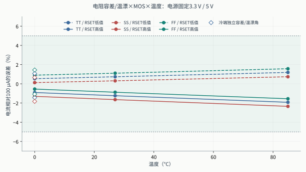
单看MOS角会漏掉设定电阻误差：RSET的变化直接进入I≈VSET/RSET。RRELEASE在正常DC下几乎不改变电流，但不能因此推导其故障释放动态无关。VSET仍是理想0.5V，尚未加入其精度、温漂或噪声。所有供电、温度、元件组合尚未全笛卡尔交叉；本轮没有统计失配、热耦合或RC提取工艺角。
3. 供电变化与真实片外滤波候选
10%跌落发生于10µs，25µs恢复；分别扫描参考轨、LED轨、所有四条供电，10ns/100ns边沿。VSET和数字输入高电平仍以板级地为参考。新提出的“峰值偏离≤20%、恢复±0.5%≤5µs”均以同一试验扰动前/恢复后的DC电流为基准，静态100µA精度另算；这些线仅用于显示设计折衷；它不是用户给定或已经建立的产品规格。
| 电路/条件 | LED支路范围 / µA | 最大偏离 | 恢复 / µs | 两项研究预算 |
|---|---|---|---|---|
| 原r5，参考轨100ns | 60.161–147.240 | 47.625% | 2.490 | 未同时满足 |
| 原r5，参考轨10ns | 60.025–147.467 | 47.852% | 2.532 | 未同时满足 |
| 原r5，LED轨10ns | 96.557–102.412 | 3.191% | 0.001 | 均满足 |
| 原r5，全部轨10ns+封装 | 59.749–147.419 | 47.805% | 2.535 | 未同时满足 |
| die端100Ω+100nF | 96.736–102.056 | 3.006% | 17.743 | 未同时满足 |
| die端100nF，R−5%/C−10% | 96.299–102.584 | 3.444% | 17.223 | 未同时满足 |
| die端100nF，R+5%/C+10% | 97.093–101.637 | 2.647% | 17.840 | 未同时满足 |
| 100Ω+10nF，已否决折衷点 | 83.237–117.019 | 17.332% | 5.270 | 未同时满足 |
| die端100Ω+8.2nF | 81.411–119.028 | 19.346% | 4.727 | 均满足 |
| die端8.2nF，R−5%/C−10% | 79.938–120.676 | 20.998% | 4.359 | 未同时满足 |
| die端8.2nF，R+5%/C+10% | 82.743–117.559 | 17.873% | 5.117 | 未同时满足 |
| PCB侧100Ω+100nF | 96.681–102.124 | 3.061% | 17.713 | 未同时满足 |
| PCB侧100nF，全部轨10ns | 91.574–106.276 | 8.182% | 17.714 | 未同时满足 |
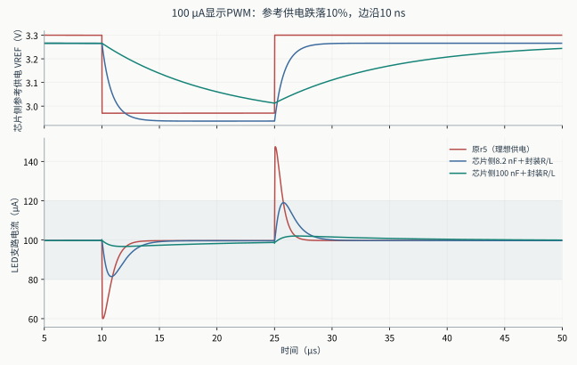
100ns参考轨旧扰动重现约60.16–147.24µA及2.49µs恢复，与旧报告一致。10ns扰动中SENSE在约0.4166–0.5820V之间变化；有限带宽的参考环路不能瞬时维持0.5V，镜像电流随之下冲和上冲。封装R/L不是这一主要幅度的来源。
第一批候选是宏端口侧100Ω串联电阻、电容接die-VSS，属于die端口/封装内局部电容假设，不能称为真实PCB片外放置。后续board100n候选保持100Ω/100nF数值，把R和C都移到封装R/L之前、C回板级地。39MOS及其PEX均不变。电阻DC压降、滤波启动及数字故障回放重新计算。100nF强抑制方案可以继续作为研究候选，但是否容许其恢复时间需由系统要求决定。容差扫描对应早期die端口拓扑，不能当作PCB侧拓扑的容差验证；8.2nF的名义通过无法覆盖所测元件容差。未为使候选通过而修改20%/5µs比较线。
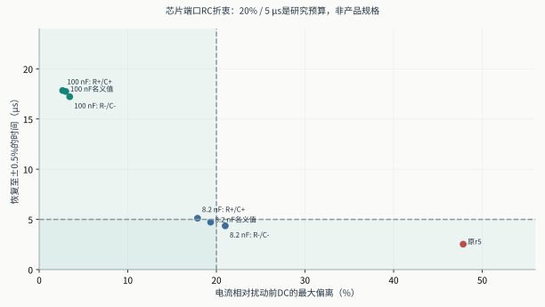
4. 封装、启动、故障和最小PWM码
封装用五条独立串联R/L路径：VREF、VSAFE、VBUF、LED_A和共用VSS回流。名义每条0.2Ω/2nH，应力每条1Ω/5nH。这里没有pad/ESD、引脚互感、LED_K/SENSE/VSET等信号脚的串联寄生、封装场求解、完整板级网络或阵列共用回流；参数是试验假设。SENSE原有30pF预算、片外电阻及外部VSET参考点均保留。
启动仍预先供好安全/缓冲/LED电源，参考轨100ns上升，外部FAULT保持20µs；不是任意顺序或同时上电验证。故障在50.125µs施加，时钟47.7µs停止，使用实际RTL事件及10ns模拟引脚边沿。前期duty=1对完整两帧积分；板侧100nF确认采用258.5–514.5µs单个完整帧，已远离10µs参考滤波时间常数的初始过程。两者均与相同网络的DC电流比较，具体窗口记录在case和结果中。
| 本轮耦合复验 | 主要数据 | 判定 |
|---|---|---|
startup_package_stress |
启动保持峰值 627.2691nA；恢复 99.7384µA | 失败：startup_held_fault_1nA |
fault_package_stress |
关闭 205.784ns；Q+ 0.5048pC；Q− -7.3635pC | 所列门槛通过 |
pwm_package_stress |
duty=1电荷误差 -0.07132% | 所列门槛通过 |
startup_filtered8p2n |
启动保持峰值 381.4308nA；恢复 99.7335µA | 失败：startup_held_fault_1nA |
fault_filtered8p2n |
关闭 205.801ns；Q+ 0.5047pC；Q− -7.3635pC | 所列门槛通过 |
pwm_filtered8p2n |
duty=1电荷误差 -0.06674% | 所列门槛通过 |
startup_filtered |
启动保持峰值 377.5422nA；恢复 99.7573µA | 失败：startup_held_fault_1nA |
fault_filtered |
关闭 205.778ns；Q+ 0.5047pC；Q− -7.3635pC | 所列门槛通过 |
pwm_filtered |
duty=1电荷误差 -0.06297% | 所列门槛通过 |
startup_board100n |
doAnalyses: TRAN: Timestep too small; time = 6.14467e-11, timestep = 2.5e-21: trouble with node "vpermit#branch" | 求解未完成，不能验收 |
fault_board100n |
关闭 205.793ns；Q+ 0.5047pC；Q− -7.3635pC | 所列门槛通过 |
pwm_board100n |
duty=1电荷误差 -0.07135% | 所列门槛通过 |
startup_board100n_gear1 |
doAnalyses: TRAN: Timestep too small; time = 2.727e-10, timestep = 2.5e-21: trouble with node "vpermit#branch" | 求解未完成，不能验收 |
startup_board100n_wide |
启动保持峰值 0.0283nA；恢复 99.7546µA | 单一wide配置的功能门槛通过；数值一致性未闭合 |
startup_package_stress_refined |
启动保持峰值 626.7084nA；恢复 99.7384µA | 失败：startup_held_fault_1nA |
startup_filtered_refined |
doAnalyses: TRAN: Timestep too small; time = 1.01695e-07, timestep = 2.5e-21: trouble with node "vpermit#branch" | 求解未完成，不能验收 |
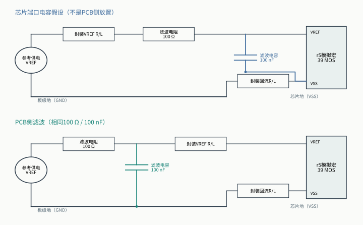
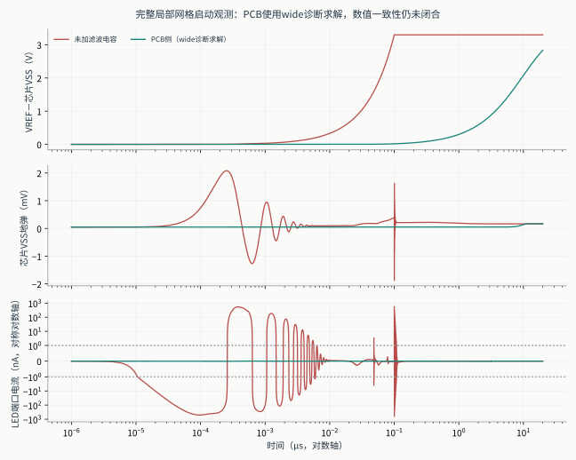
同一R/C值的回流路径是本轮新增的重要边界。die端电容的充电电流经过共同封装VSS阻抗，会抬高局部地；PCB侧电容先在板级地闭合充电回路。以下使用完整局部网格的20µs窗口；未收敛数据不画成有效波形，PCB侧只显示wide诊断配置。图中PCB曲线的求解容差与严格基线不同，不能作为同数值设置下的修复闭合证明：
| 完整网格启动 | 支路峰值 / nA | 导电峰值 / nA | 位移峰值 / nA | die-GND峰值 / mV |
|---|---|---|---|---|
startup_package_stress_refined |
626.708443 | <0.001（近零数值量） | 626.708496 | 2.083238 |
startup_board100n_wide |
0.028308 | <0.001（近零数值量） | 0.028308 | 0.174542 |
无滤波的约627nA峰在完整网格下仍为约626.7nA，因此新封装下的启动暗态支路失败不能归零为数值伪影。板侧启动的Gear2/Gear1严格求解失败均保留；wide组合为同电路的数值诊断（reltol=1e−8、abstol=1pA、vntol=100nV）。即使单个wide配置能完成，也没有独立细化一致性闭合，不能据此宣称startup验证完成。网格变化与回流拓扑变化分开记录。
关断判断包含LED总支路1nA门槛、正负电荷分别积分、停止时钟时的释放导电电流和恢复电流。端口位移电流不能被当成实测发光，正负电荷不能抵消后宣布安全。
5. 端电压与数值可信度
r5含33只06v0器件、6只05v0 buf_2器件；没有高速NRZ对照路线中的3.3V薄氧核心器件，因此不能套用3.63V筛查。新瞬态记录每只MOS实际分布式RC端点的|VGS|、|VGD|、|VGB|、|VDS|、|VBS|、|VBD|。前期DC及早期候选仅记录5对（未含VGB），摘要明确保留其195项与新234项的区别，不能相减峰值补出VGB。它们是terminal-voltage inventory，不是foundry绝对额定、寿命、ESD或可靠性验收。
- 完整六对记录中，05v0最大端点差：3.629276V，
dc_guard_ff/s_x24_gd。 - 完整六对记录中，06v0最大端点差：5.499898V，
dc_guard_ff/s_x12_gs。
最大步长2ns与1ns代表对照：
step_ref_10ns：最大插值电流差4.50518nA，恢复时间差0.17217ns。step_all_10ns_package_stress：最大插值电流差1.73780nA，恢复时间差0.58178ns。step_ref_10ns_filtered8p2n：最大插值电流差0.63917nA，恢复时间差0.68517ns。
全部指标从完整波形计算；CSV只用于绘图。每份raw先计算SHA-256，再gzip压缩，解压回读哈希相符后才移除未压缩副本。失败、旧instrumentation尝试及ngspice日志保留在build，未把图形降采样当作数值验证。
6. 可继续的研究与复现
优先确认显示系统对瞬时电流、暗态位移电荷和恢复时间的真实要求，再决定是否采用强滤波片外方案；随后完成任意上电/掉电、POR/欠压及pad/ESD和封装网络。统计失配、电阻实际料号与TC、电容偏压效应、真实LED标定及阵列回流仍未覆盖。
.venv/bin/python scripts/pwm_robustness/run.py --suite dc --reuse
.venv/bin/python scripts/pwm_robustness/run.py --suite transient --reuse
.venv/bin/python scripts/pwm_robustness/run.py --suite selected --reuse
.venv/bin/python scripts/pwm_robustness/run.py --suite strong --reuse
.venv/bin/python scripts/pwm_robustness/run.py --suite board --reuse
.venv/bin/python scripts/pwm_robustness/run.py --suite summarize
.venv/bin/python scripts/pwm_robustness/report.py
.venv/bin/python scripts/pwm_robustness/topology_figure.py
主证据：evidence/pwm-robustness/20261024/summary.json、compact-metrics.csv、validation.json与input-manifest.json。完整原始波形/冻结模型/输入网表位于build/pwm-robustness/20261024/。本轮未建立光学、硅片、整芯片、MPW或foundry可靠性结论。
6. 如何据此决定下一步
- 显示PWM：先收敛参考供电与保护的动态设计。 电流设置电阻的精度与温漂须形成独立预算；滤波器应明确放在板侧还是芯片侧，并核查启动位移电流、积分电荷及恢复时间。单一RC同时满足扰动抑制和快速恢复的证据尚不足，下一步应比较参考源PSRR、缓冲驱动能力与有控上电，而非继续盲目增大电容。
- 高速：优先继续B电流转向的供电和真实参考设计；A保留为对照。 B本轮扰动表现较稳健，但尚有固定理想RREF/RDUMMY、电源生成和模型边界。A首先需要实际可调、可吸收电流的VH/VL控制，稳定LED两端的电压差；仅缩短输入电阻或提高MOS耐压不能解决辅助电源导致的接收失效。实际电源环路引入后再用相同RX复查。
- 物理验证：从集总假设推进可测的封装/PCB模型。 本轮已证明供电与回地的R/L会改变局部D/G/S/B电压。下一阶段须以选定封装的引脚、键合/凸点、走线和去耦位置建立提取或测量模型，并补全pad/ESD、电源网和电源调节器，再讨论全芯片余量。
本轮没有完成实测LED温度/动态拟合、噪声与随机抖动BER、MOS失配统计、完整封装/PCB电磁提取、ESD、pad ring、EM/IR、HCI/TDDB寿命签核或硅后光学测量。这里的GDS是实验核心；DRC/LVS/PEX分别证明对应规则、连接与所声明提取模型的工作，不能把它们升级为整芯片可流片或可销售的证据。
7. 复现、审计与技术依据
本轮高速正式旧核心扰动矩阵为42个有效实验；最终候选矩阵为65个，全部完成求解和分析，最终候选保留7个接收筛查失败，器件电压筛查失败为0。65个包含DC、速率探针、供电/电阻/封装扰动与数值对照；不是65个独立统计样本，也不代表所有工艺和系统扰动已穷举。早期候选与管理中止另列于阶段执行清单。
6组高速数值控制均满足预先声明的对照容差：最大端压变化约62.93 µV、垂直余量变化0.0001661、水平余量变化0 UI，正向能量相对变化约0.0140%。数值稳定不能修复电路自身失败。
PWM共有101个运行身份（59 DC、26供电阶跃、8启动、4故障、4 PWM），98完成、3未收敛；其中包含5个仅扩充端电压观测的重复，不能作为额外独立样本。已完成每个case的输入、网表、日志、压缩及解压波形哈希核验，并保留旧5端对与新6端对观测范围的区别。
新目录的小输入复跑也已实测：NRZ只恢复本轮inputs/stimulus/manifest，PWM只恢复8个冻结输入及case清单，即可重新生成新路径网表并完成DC检查；这不替代在另一操作系统上跑完全部矩阵。详细命令见本轮README。
实验幅度和研究预算先于相应用例声明，结果没有全部通过。被替代候选的未运行计划与真正仿真失败分别记录；仿真失败不赋予接收性能值。早期分析器执行来源记录的问题由独立重分析补救，历史文件保留，补救记录不冒充当时就正确冻结了来源。
实验设计 · 报告输入与图形SHA-256 · 跨机器恢复说明